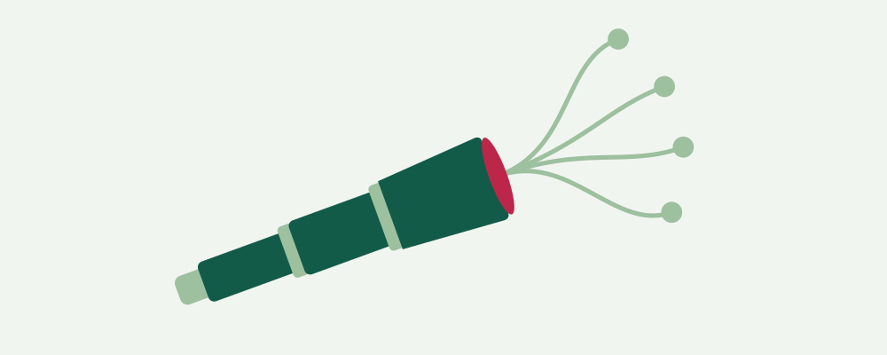

arq decisions
With clear questions, arq decisions helps organizations shape their future successfully.
- Meet the organization where it stands today
- Bring its assumptions together, transparently
- Identify the critical uncertainties
- Derive signals that show the way into the future early

arq perspektivIn two weeks, from many views to one shared picture: three workshops and an AI analysis that end in a Future Atlas.- arq radarAn organization's own instance on the arq decisions forecasting platform: a dynamic monitor that shows where things are moving on its questions about the future.